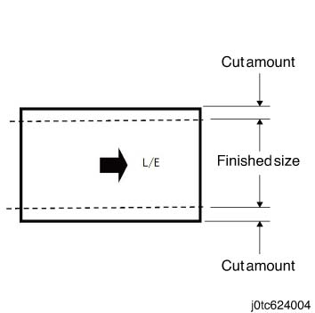
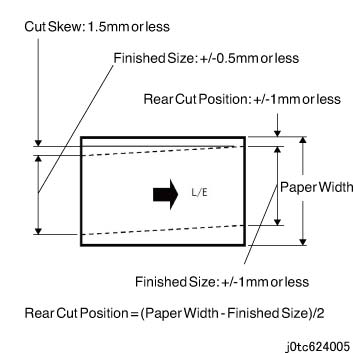

6.2.5.13 TCBM/TBM 裁切 特性 
此 特性 裁切 the 顶部 和 底部 of fed 纸张.
执行 裁切
当...时 a finished 尺寸 is entered, 此 特性 calculates a cut 数量 so 该 it 将 the 相同 距离 从 两个 the 顶部 和 底部 的 原始 尺寸 在...之前 vertical 裁切. 但是, 每个 的 顶部 和 底部 cut amounts 必须 在...之内 6 to 25 mm, 和 the finished 尺寸 必须 182 mm或 longer.

If IOT gives an instruction to 裁切 外部 的 possible 裁切 范围, a 卡纸 可以 develop at the TCBM 入口.

(图 1) tc624004
调整 裁切位置
当...时 a cut 位置 从顶部 侧面 is entered, the 裁切位置 可以 adjusted 没有 changing the finished 尺寸. 但是, the 值 必须 在...之内 +/-2 mm 从 the 值 用于 中央 split, the cut 数量 在...之后 the 调整 无法 exceed the 范围 之间 6 和 25 mm. A user 可以 执行 歪斜 调整 (loop 数量 调整) 取决于 the 纸张类型. 调整 by using the TCBM Regi 辊 应 已执行 by CE (the 调整 is possible by using the tab, 虽然 a driver 需要).
Accuracy of 裁切
The accuracy at 后面 cutting 位置 is 最大到 +/-1 mm of 目标的 dimensions at 纸张 引线/导向 边缘, the finished 尺寸 必须 将 在...之内 +/-0.5 mm, the cut 歪斜 is 1.5 mm或 better 对 纸张 长度, 和 the cut 歪斜 is 1.5 mm或 better 对 纸张 长度.

(图 2) tc624005
Productivity 在...期间 裁切
The 列表 显示 the performance ...所需的 裁切 和 the 实际 performance is determined by the features being combined.
Productivity refers 到 productivity 当...时 IOT 送纸 纸张 at the pitch notified by the TCBM, 和 当...时 the 相同 设置 号码 is continuously used.
Productivity 在...期间 裁切 (纸张/Minute) 尺寸/Orientation
Dimension FS/SS
Feeding 速度: 1000 mm/s
小册子 输出
顶部 纸盘 输出
A4L
297.0x210.0
-
106
8.5 X 11 L (Letter)
279.4x215.9
-
104
8.5 X 11 S (Letter)
215.9x279.4
94
94
A4 S
210.0x297.0
91
91
A3 S
297.0x420.0
68
68
11 X 17 S (Ledger)
279.4x431.8
67
67